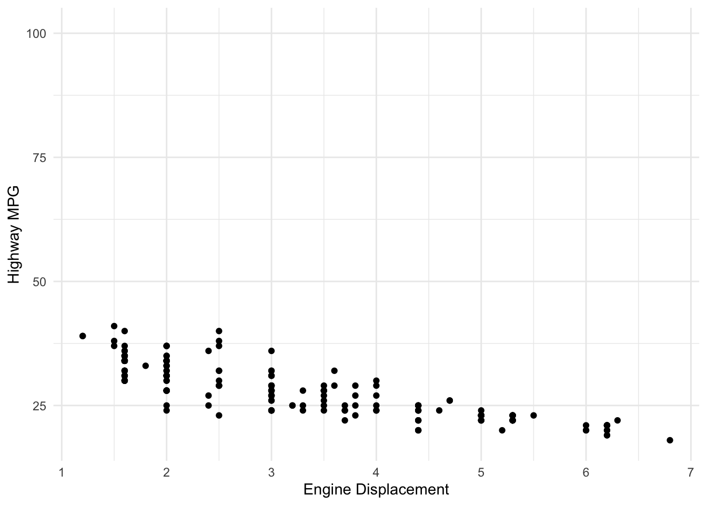
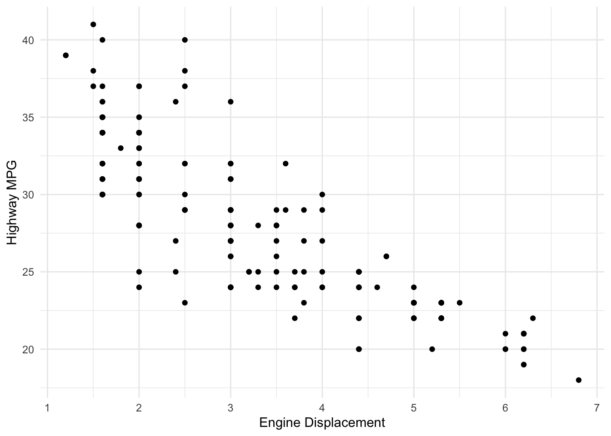
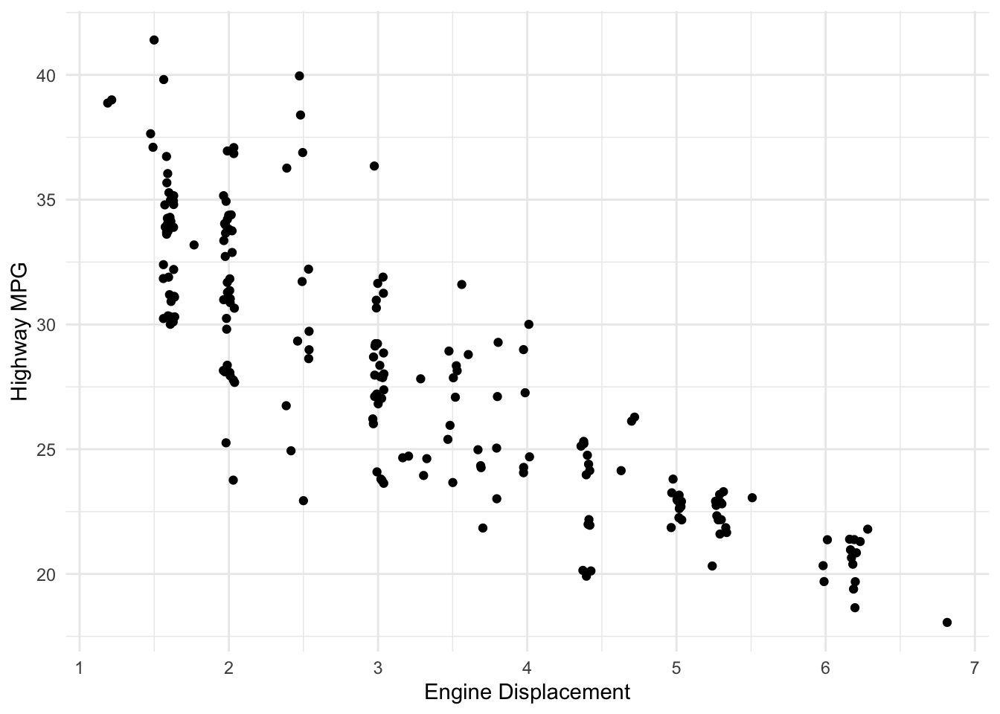
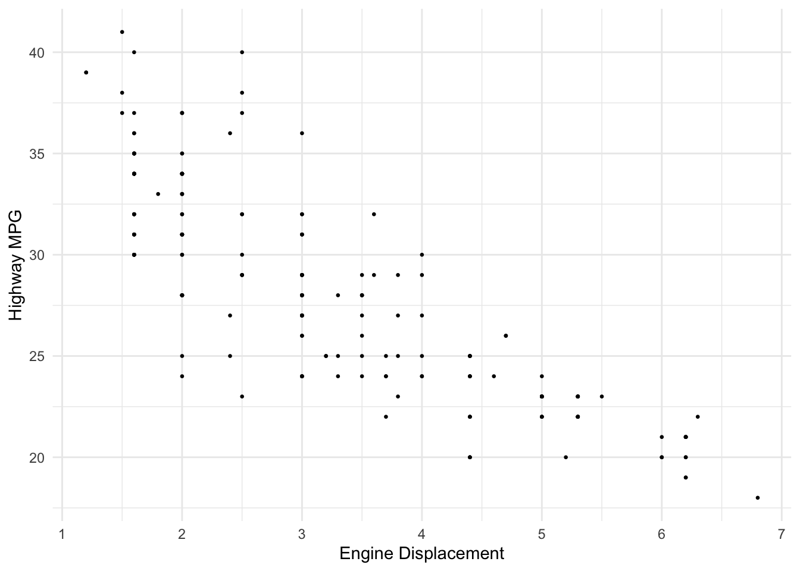
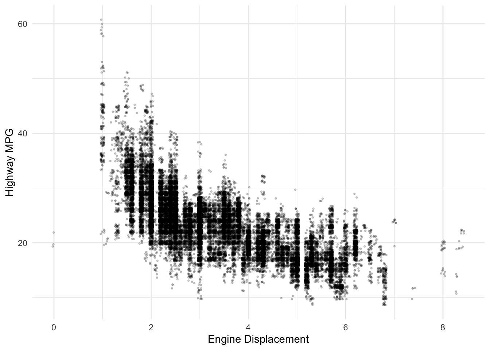
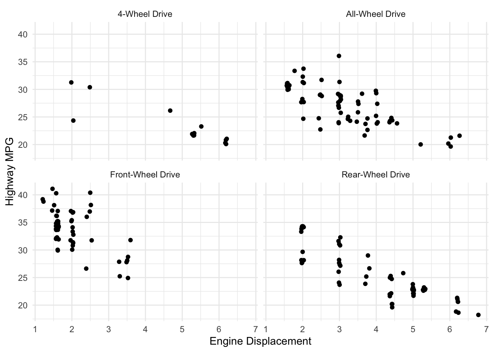
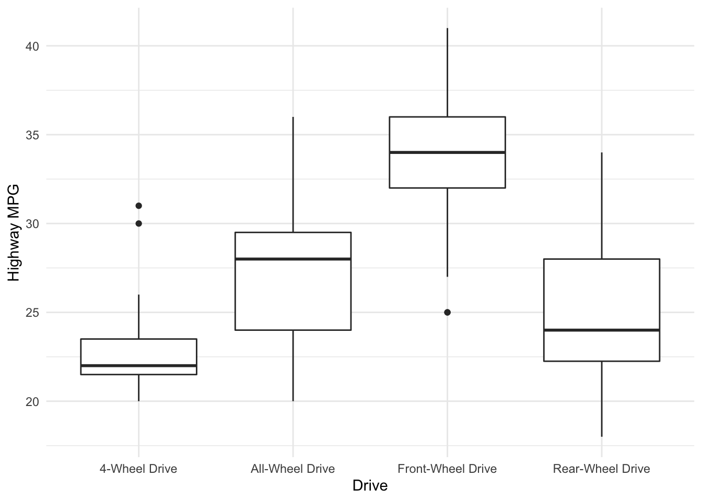
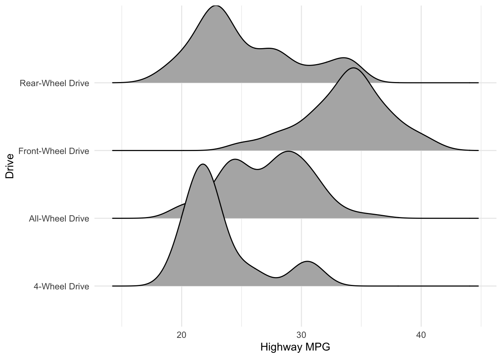

Reminder: Libraries!
As always, we start our file with a code chunk that loads the libraries we will use throughout this document. Install any new libraries before running the code.
library(tidyverse) #used for visualization, summarization, and basic wrangling
library(ggridges) #New! Used for making density ridge plots
library(fueleconomy) #for the dataset

GOAL:
Expand on the previous section to investigate where variability in our response variable is coming from. We noticed that there was variability across vehicles’ highway mpg but didn’t investigate why. Are there other variables that might explain some of the variation? Which variables might have stronger or weaker relationships? How can we visualize these relationships?
Specifically, we will investigate relationship between:
Response/dependent/outcome variable: the variable whose variability we would like to explain (eg. hwy)
Predictors/explanatory variables/independent variables/covariates: variables that might explain some of the variability in the response (eg. displ)
We will construct visualizations that allow us to examine:
Relationship trends (form and direction of the relationship, eg. positive and linear) or differences across groups.
Relationship strength (degree of variability from the trend or how tight the points are around the envisioned trend)
Outliers in the relationship
By the end of these notes and activities, you should have a general idea for how to do the following tasks.
- Create a scatterplot to examine and relationship between two quantitative variables.
- Describe the from, strength, and direction that you observe in a scatterplot.
- Compute the correlation between two quantitative variables.
- Create a side-by-side boxplot to examine the relationship between a categorical and quantitative variable and describe any meaningful differences among the groups.
- Create a ridge plot to examine the relationship between a categorical and quantitative variable and describe any meaningful differences among the groups.
- Understand when to use more advanced methods, like coloring a by a categorical variable, adding transparency, and faceting.
Quantitative vs. quantitative: scatterplots
Examine the following plot that shows the relationship between hwy and displ (engine displacement). Comment on:
- the form of the relationship (line/curve/other)
- the strength of the relationship (weak/moderate/strong)
- the direction of the relationship (positive/negative)
- outliers
ggplot(data = vehicles_2015) +
geom_point(aes(x = displ, y = hwy)) +
labs(x = "Engine Displacement", y = "Highway MPG") +
theme_minimal()
## Warning: Removed 1 rows containing missing values (geom_point).

Notice that we got a warning letting us know that one data point was removed. It was removed because it had a missing value for displ. The car with a missing value is the Nissan Leaf. It has no engine displacement because it is an electric vehicle. There are a variety of ways we could try to fix this problem, but for now, we will create a new dataset that excludes any row with missing values (it turns out the Leaf is the only one with missing values anyways).
vehicles_2015_no_na <- vehicles_2015 %>% drop_na()
ggplot(data = vehicles_2015_no_na) +
geom_point(aes(x = displ, y = hwy)) +
labs(x = "Engine Displacement", y = "Highway MPG") +
theme_minimal()

The strength of the linear relationship between two quantitative variables is measured by the correlation coefficient. The code below will compute this.
vehicles_2015_no_na %>%
summarize(corr = cor(displ, hwy))
Notice if I tried to do this with the dataset with a missing value, it returns a missing value, NA. We can add an argument to the function to compute it for all pairs with no missing values.
vehicles_2015 %>%
summarize(corr = cor(displ, hwy),
corr2 = cor(displ, hwy, use = "pairwise.complete.obs"))
YOUR TURN!
- Create a scatterplot of hwy vs. cty miles per gallon. How would you describe the relationship?
- Compute the correlation between hwy and cty.
More complex scatterplots
We can jitter the points, adding a little bit of noise to each point, in order to see if they are overplotted. Do you prefer this plot?
ggplot(data = vehicles_2015_no_na) +
geom_jitter(aes(x = displ, y = hwy)) + #noice the code change here
labs(x = "Engine Displacement", y = "Highway MPG") +
theme_minimal()

We can add an alpha argument, which controls the transparency of points. This can help if points are overplotted or if there is an overwhelming amount of data.
ggplot(data = vehicles_2015_no_na) +
geom_point(aes(x = displ, y = hwy), alpha = .2) +
labs(x = "Engine Displacement", y = "Highway MPG") +
theme_minimal()

We can make the points smaller in size. This can also help when there is a large amount of data.
ggplot(data = vehicles_2015_no_na) +
geom_point(aes(x = displ, y = hwy), size = .5) +
labs(x = "Engine Displacement", y = "Highway MPG") +
theme_minimal()

With large datasets, you may want to use a combination of these options.
ggplot(data = vehicles %>% drop_na(displ)) +
geom_jitter(aes(x = displ, y = hwy), size = .5, alpha = .2) +
labs(x = "Engine Displacement", y = "Highway MPG") +
theme_minimal()

We also might be interested in the affect of a third variable while still wanting to look at the relationship between the two quantitative variables. If the third variable is categorical, we have a couple options.
We can color the points by that variable.
ggplot(data = vehicles_2015_no_na) +
geom_jitter(aes(x = displ, y = hwy, color = drive)) +
labs(x = "Engine Displacement", y = "Highway MPG", color = "Drive") +
theme_minimal()

Or we can facet by that variable.
ggplot(data = vehicles_2015_no_na) +
geom_jitter(aes(x = displ, y = hwy)) +
facet_wrap(vars(drive)) +
labs(x = "Engine Displacement", y = "Highway MPG") +
theme_minimal()

YOUR TURN!
Create 2-3 more complex plots that examine how some variables we have not investigated yet affect hwy.
Quantitative vs. categorical: side-by-side boxplots and density “ridge” plots
Examine the side-by-side boxplot below. What are some observations you would make? What does the boxplot show? What do each of the lines on the box represent? What information is missing?
ggplot(data = vehicles_2015_no_na) +
geom_boxplot(aes(x = drive, y = hwy)) +
labs(x = "Drive", y = "Highway MPG") +
theme_minimal()

We could also examine this relationship using density plots. Notice that the x and y axis are the opposite of what they were in the boxplot. What do you observe here? Anything you didn’t observe in the boxplot?
ggplot(data = vehicles_2015_no_na) +
geom_density_ridges(aes(x = hwy, y = drive)) +
labs(x = "Highway MPG", y = "Drive") +
theme_minimal()
## Picking joint bandwidth of 1.26

We may also want to compute some statistics about the response variable for each level of the categorical variable. We can use the group_by() function along with summarize() to do that. Explain what the following code does.
vehicles_2015_no_na %>%
group_by(drive) %>%
summarize(avg_hwy = mean(hwy),
sd_hwy = sd(hwy),
med_hwy = median(hwy),
Q3 = quantile(hwy, probs = .75))
YOUR TURN!
- What are some pros and cons of the different methods for examining the relationship between a categorical and a quantitative variable? When would you use the different methods?
- Examine the relationship between
hwy and another categorical variable in the dataset. Try some of the different methods we used above. Calculate some statistics (means, medians, sd, etc.) to describe how highway mpg differs across the categorical variable.
- Try using the large
vehicles dataset with hwy as the response. Use year as a categorical variable. When you do that, you will need to use factor(year) so that R treats it as a categorical variable rather than a number. Answer the same questions as above.
A helpful table
This list is definitely not exhaustive but should help you make a good choice about which graphs will be useful in which scenarios.
| Distribution of quantitative |
Histogram |
geom_histogram(aes(x = quantitative variable)) |
| Distribution of quantitative |
Density plot |
geom_density(aes(x = quantitative variable)) |
| Distribution of categorical |
Barplot |
geom_bar(aes(x = categorical variable)) |
| Distribution of categorical (if you already know the counts) |
Barplot |
geom_col(aes(x = categorical variable, y = count variable)) |
| Relationship between quant. response and quant. predictor |
Scatterplot |
geom_point(aes(x = quant. predictor, y = quant. response)) |
| Relationship between quant. response and cat. predictor |
side-by-side boxplots |
geom_boxplot(aes(x = cat. predictor, y = quant. response)) |
| Relationship between quant. response and cat. predictor |
density ridge plots |
geom_density_ridges(aes(x = quant. response, y = cat. predictor)) |
So many more plots!
We have focused on the plots we will need most to better understand the data that we will use to create linear models. We will continue to use these plots, and we will add to them as needed. I also encourage you to explore more on your own. The esquisse package is especially helpful when you are first starting your explorations.
LS0tCnRpdGxlOiAnV29ya2luZyB3aXRoIG1vcmUgdGhhbiBvbmUgdmFyaWFibGU6IFxuIG11bHRpdmFyaWF0ZSByZWxhdGlvbnNoaXBzJwpvdXRwdXQ6ICAgCiAgaHRtbF9kb2N1bWVudDogCiAgICB0b2M6IHRydWUKICAgIHRvY19mbG9hdDogdHJ1ZQogICAgZGZfcHJpbnQ6IHBhZ2VkCiAgICBjb2RlX2Rvd25sb2FkOiB0cnVlCi0tLQoKYGBge3Igc2V0dXAsIGluY2x1ZGU9RkFMU0V9CmtuaXRyOjpvcHRzX2NodW5rJHNldChlcnJvciA9IFRSVUUpCmBgYAoKIyMgUmVtaW5kZXI6IExpYnJhcmllcyEKCkFzIGFsd2F5cywgd2Ugc3RhcnQgb3VyIGZpbGUgd2l0aCBhIGNvZGUgY2h1bmsgdGhhdCBsb2FkcyB0aGUgbGlicmFyaWVzIHdlIHdpbGwgdXNlIHRocm91Z2hvdXQgdGhpcyBkb2N1bWVudC4gSW5zdGFsbCBhbnkgbmV3IGxpYnJhcmllcyBiZWZvcmUgcnVubmluZyB0aGUgY29kZS4KCmBgYHtyIGxpYnJhcmllcywgbWVzc2FnZT1GQUxTRX0KbGlicmFyeSh0aWR5dmVyc2UpICN1c2VkIGZvciB2aXN1YWxpemF0aW9uLCBzdW1tYXJpemF0aW9uLCBhbmQgYmFzaWMgd3JhbmdsaW5nCmxpYnJhcnkoZ2dyaWRnZXMpICNOZXchIFVzZWQgZm9yIG1ha2luZyBkZW5zaXR5IHJpZGdlIHBsb3RzCmxpYnJhcnkoZnVlbGVjb25vbXkpICNmb3IgdGhlIGRhdGFzZXQKYGBgCgoKPGNlbnRlcj4KIVtdKGltYWdlcy9tb2Rlcm5kaXZlX2Zsb3djaGFydF9leHBsb3JlLnBuZyl7d2lkdGg9NjAwcHh9CjwvY2VudGVyPgoKPGRpdiBjbGFzcz0iYWxlcnQgYWxlcnQtc3VjY2VzcyI+CiAgPHN0cm9uZz5HT0FMOjwvc3Ryb25nPgoKRXhwYW5kIG9uIHRoZSBwcmV2aW91cyBzZWN0aW9uIHRvIGludmVzdGlnYXRlIHdoZXJlIHZhcmlhYmlsaXR5IGluIG91ciAqKnJlc3BvbnNlIHZhcmlhYmxlKiogaXMgY29taW5nIGZyb20uIFdlIG5vdGljZWQgdGhhdCB0aGVyZSB3YXMgdmFyaWFiaWxpdHkgYWNyb3NzIHZlaGljbGVzJyBoaWdod2F5IG1wZyBidXQgZGlkbid0IGludmVzdGlnYXRlICp3aHkqLiBBcmUgdGhlcmUgb3RoZXIgdmFyaWFibGVzIHRoYXQgbWlnaHQgZXhwbGFpbiBzb21lIG9mIHRoZSB2YXJpYXRpb24/IFdoaWNoIHZhcmlhYmxlcyBtaWdodCBoYXZlIHN0cm9uZ2VyIG9yIHdlYWtlciByZWxhdGlvbnNoaXBzPyBIb3cgY2FuIHdlIHZpc3VhbGl6ZSB0aGVzZSByZWxhdGlvbnNoaXBzPwoKU3BlY2lmaWNhbGx5LCB3ZSB3aWxsIGludmVzdGlnYXRlIHJlbGF0aW9uc2hpcCBiZXR3ZWVuOgoKKipSZXNwb25zZS9kZXBlbmRlbnQvb3V0Y29tZSB2YXJpYWJsZSoqOiB0aGUgdmFyaWFibGUgd2hvc2UgdmFyaWFiaWxpdHkgd2Ugd291bGQgbGlrZSB0byBleHBsYWluIChlZy4gYGh3eWApCgoqKlByZWRpY3RvcnMvZXhwbGFuYXRvcnkgdmFyaWFibGVzL2luZGVwZW5kZW50IHZhcmlhYmxlcy9jb3ZhcmlhdGVzKio6IHZhcmlhYmxlcyB0aGF0IG1pZ2h0IGV4cGxhaW4gc29tZSBvZiB0aGUgdmFyaWFiaWxpdHkgaW4gdGhlIHJlc3BvbnNlIChlZy4gYGRpc3BsYCkKCldlIHdpbGwgY29uc3RydWN0IHZpc3VhbGl6YXRpb25zIHRoYXQgYWxsb3cgdXMgdG8gZXhhbWluZToKCiogUmVsYXRpb25zaGlwICp0cmVuZHMqIChmb3JtIGFuZCBkaXJlY3Rpb24gb2YgdGhlIHJlbGF0aW9uc2hpcCwgZWcuIHBvc2l0aXZlIGFuZCBsaW5lYXIpIG9yIGRpZmZlcmVuY2VzIGFjcm9zcyBncm91cHMuCiogUmVsYXRpb25zaGlwICpzdHJlbmd0aCogKGRlZ3JlZSBvZiB2YXJpYWJpbGl0eSBmcm9tIHRoZSB0cmVuZCBvciBob3cgdGlnaHQgdGhlIHBvaW50cyBhcmUgYXJvdW5kIHRoZSBlbnZpc2lvbmVkIHRyZW5kKSAgICAKCiogKk91dGxpZXJzKiBpbiB0aGUgcmVsYXRpb25zaGlwCgpCeSB0aGUgZW5kIG9mIHRoZXNlIG5vdGVzIGFuZCBhY3Rpdml0aWVzLCB5b3Ugc2hvdWxkIGhhdmUgYSBnZW5lcmFsIGlkZWEgZm9yIGhvdyB0byBkbyB0aGUgZm9sbG93aW5nIHRhc2tzLgoKKiBDcmVhdGUgYSBzY2F0dGVycGxvdCB0byBleGFtaW5lIGFuZCByZWxhdGlvbnNoaXAgYmV0d2VlbiB0d28gcXVhbnRpdGF0aXZlIHZhcmlhYmxlcy4gIAoqIERlc2NyaWJlIHRoZSBmcm9tLCBzdHJlbmd0aCwgYW5kIGRpcmVjdGlvbiB0aGF0IHlvdSBvYnNlcnZlIGluIGEgc2NhdHRlcnBsb3QuICAKKiBDb21wdXRlIHRoZSBjb3JyZWxhdGlvbiBiZXR3ZWVuIHR3byBxdWFudGl0YXRpdmUgdmFyaWFibGVzLiAgCiogQ3JlYXRlIGEgc2lkZS1ieS1zaWRlIGJveHBsb3QgdG8gZXhhbWluZSB0aGUgcmVsYXRpb25zaGlwIGJldHdlZW4gYSBjYXRlZ29yaWNhbCBhbmQgcXVhbnRpdGF0aXZlIHZhcmlhYmxlIGFuZCBkZXNjcmliZSBhbnkgbWVhbmluZ2Z1bCBkaWZmZXJlbmNlcyBhbW9uZyB0aGUgZ3JvdXBzLiAgCiogQ3JlYXRlIGEgcmlkZ2UgcGxvdCB0byBleGFtaW5lIHRoZSByZWxhdGlvbnNoaXAgYmV0d2VlbiBhIGNhdGVnb3JpY2FsIGFuZCBxdWFudGl0YXRpdmUgdmFyaWFibGUgYW5kIGRlc2NyaWJlIGFueSBtZWFuaW5nZnVsIGRpZmZlcmVuY2VzIGFtb25nIHRoZSBncm91cHMuICAKKiBVbmRlcnN0YW5kIHdoZW4gdG8gdXNlIG1vcmUgYWR2YW5jZWQgbWV0aG9kcywgbGlrZSBjb2xvcmluZyBhIGJ5IGEgY2F0ZWdvcmljYWwgdmFyaWFibGUsIGFkZGluZyB0cmFuc3BhcmVuY3ksIGFuZCBmYWNldGluZy4KCjwvZGl2PgoKIyMgVGhlIGRhdGEKCldlIHdpbGwgYWdhaW4gdXNlIGEgc3Vic2V0IG9mIHRoZSBgdmVoaWNsZXNgIGRhdGEgZnJvbSB0aGUgYGZ1ZWxlY29ub215YCBkYXRhc2V0IHRocm91Z2hvdXQuIEZvciBhIHJlbWluZGVyIG9mIHdoYXQgaXMgYWxsIGluIHRoZSBkYXRhc2V0LCBgP3ZlaGljbGVzYCBpbiB0aGUgY29uc29sZS4KCmBgYHtyfQp2ZWhpY2xlc18yMDE1IDwtIHZlaGljbGVzICU+JSBmaWx0ZXIoeWVhciA9PSAyMDE1KQpgYGAKCiMjIFF1YW50aXRhdGl2ZSB2cy4gcXVhbnRpdGF0aXZlOiBzY2F0dGVycGxvdHMgCgpFeGFtaW5lIHRoZSBmb2xsb3dpbmcgcGxvdCB0aGF0IHNob3dzIHRoZSByZWxhdGlvbnNoaXAgYmV0d2VlbiBgaHd5YCBhbmQgYGRpc3BsYCAoZW5naW5lIGRpc3BsYWNlbWVudCkuIENvbW1lbnQgb246CiAgICAgICAgCiogdGhlIGZvcm0gb2YgdGhlIHJlbGF0aW9uc2hpcCAobGluZS9jdXJ2ZS9vdGhlcikKKiB0aGUgc3RyZW5ndGggb2YgdGhlIHJlbGF0aW9uc2hpcCAod2Vhay9tb2RlcmF0ZS9zdHJvbmcpCiogdGhlIGRpcmVjdGlvbiBvZiB0aGUgcmVsYXRpb25zaGlwIChwb3NpdGl2ZS9uZWdhdGl2ZSkKKiBvdXRsaWVycyAKCmBgYHtyfQpnZ3Bsb3QoZGF0YSA9IHZlaGljbGVzXzIwMTUpICsKICBnZW9tX3BvaW50KGFlcyh4ID0gZGlzcGwsIHkgPSBod3kpKSArCiAgbGFicyh4ID0gIkVuZ2luZSBEaXNwbGFjZW1lbnQiLCB5ID0gIkhpZ2h3YXkgTVBHIikgKwogIHRoZW1lX21pbmltYWwoKQpgYGAKCk5vdGljZSB0aGF0IHdlIGdvdCBhIHdhcm5pbmcgbGV0dGluZyB1cyBrbm93IHRoYXQgb25lIGRhdGEgcG9pbnQgd2FzIHJlbW92ZWQuIEl0IHdhcyByZW1vdmVkIGJlY2F1c2UgaXQgaGFkIGEgbWlzc2luZyB2YWx1ZSBmb3IgYGRpc3BsYC4gVGhlIGNhciB3aXRoIGEgbWlzc2luZyB2YWx1ZSBpcyB0aGUgTmlzc2FuIExlYWYuIEl0IGhhcyBubyBlbmdpbmUgZGlzcGxhY2VtZW50IGJlY2F1c2UgaXQgaXMgYW4gZWxlY3RyaWMgdmVoaWNsZS4gVGhlcmUgYXJlIGEgdmFyaWV0eSBvZiB3YXlzIHdlIGNvdWxkIHRyeSB0byBmaXggdGhpcyBwcm9ibGVtLCBidXQgZm9yIG5vdywgd2Ugd2lsbCBjcmVhdGUgYSBuZXcgZGF0YXNldCB0aGF0IGV4Y2x1ZGVzIGFueSByb3cgd2l0aCBtaXNzaW5nIHZhbHVlcyAoaXQgdHVybnMgb3V0IHRoZSBMZWFmIGlzIHRoZSBvbmx5IG9uZSB3aXRoIG1pc3NpbmcgdmFsdWVzIGFueXdheXMpLgoKYGBge3J9CnZlaGljbGVzXzIwMTVfbm9fbmEgPC0gdmVoaWNsZXNfMjAxNSAlPiUgZHJvcF9uYSgpCmBgYAoKYGBge3J9CmdncGxvdChkYXRhID0gdmVoaWNsZXNfMjAxNV9ub19uYSkgKwogIGdlb21fcG9pbnQoYWVzKHggPSBkaXNwbCwgeSA9IGh3eSkpICsKICBsYWJzKHggPSAiRW5naW5lIERpc3BsYWNlbWVudCIsIHkgPSAiSGlnaHdheSBNUEciKSArCiAgdGhlbWVfbWluaW1hbCgpCmBgYAoKVGhlIHN0cmVuZ3RoIG9mIHRoZSAqbGluZWFyKiByZWxhdGlvbnNoaXAgYmV0d2VlbiB0d28gcXVhbnRpdGF0aXZlIHZhcmlhYmxlcyBpcyBtZWFzdXJlZCBieSB0aGUgKipjb3JyZWxhdGlvbiBjb2VmZmljaWVudCoqLiBUaGUgY29kZSBiZWxvdyB3aWxsIGNvbXB1dGUgdGhpcy4KCmBgYHtyfQp2ZWhpY2xlc18yMDE1X25vX25hICU+JSAKICBzdW1tYXJpemUoY29yciA9IGNvcihkaXNwbCwgaHd5KSkKYGBgCgpOb3RpY2UgaWYgSSB0cmllZCB0byBkbyB0aGlzIHdpdGggdGhlIGRhdGFzZXQgd2l0aCBhIG1pc3NpbmcgdmFsdWUsIGl0IHJldHVybnMgYSBtaXNzaW5nIHZhbHVlLCBgTkFgLiBXZSBjYW4gYWRkIGFuIGFyZ3VtZW50IHRvIHRoZSBmdW5jdGlvbiB0byBjb21wdXRlIGl0IGZvciBhbGwgcGFpcnMgd2l0aCBubyBtaXNzaW5nIHZhbHVlcy4KCmBgYHtyfQp2ZWhpY2xlc18yMDE1ICU+JSAKICBzdW1tYXJpemUoY29yciA9IGNvcihkaXNwbCwgaHd5KSwKICAgICAgICAgICAgY29ycjIgPSBjb3IoZGlzcGwsIGh3eSwgdXNlID0gInBhaXJ3aXNlLmNvbXBsZXRlLm9icyIpKQpgYGAKCjxkaXYgY2xhc3M9ImFsZXJ0IGFsZXJ0LWluZm8iPgogIDxzdHJvbmc+WU9VUiBUVVJOITwvc3Ryb25nPiAKCjEuIENyZWF0ZSBhIHNjYXR0ZXJwbG90IG9mICpod3kqIHZzLiAqY3R5KiBtaWxlcyBwZXIgZ2FsbG9uLiBIb3cgd291bGQgeW91IGRlc2NyaWJlIHRoZSByZWxhdGlvbnNoaXA/ICAKMi4gQ29tcHV0ZSB0aGUgY29ycmVsYXRpb24gYmV0d2VlbiAqaHd5KiBhbmQgKmN0eSouCgo8L2Rpdj4KCiMjIyBNb3JlIGNvbXBsZXggc2NhdHRlcnBsb3RzCgpXZSBjYW4gaml0dGVyIHRoZSBwb2ludHMsIGFkZGluZyBhIGxpdHRsZSBiaXQgb2Ygbm9pc2UgdG8gZWFjaCBwb2ludCwgaW4gb3JkZXIgdG8gc2VlIGlmIHRoZXkgYXJlIG92ZXJwbG90dGVkLiBEbyB5b3UgcHJlZmVyIHRoaXMgcGxvdD8KCmBgYHtyfQpnZ3Bsb3QoZGF0YSA9IHZlaGljbGVzXzIwMTVfbm9fbmEpICsKICBnZW9tX2ppdHRlcihhZXMoeCA9IGRpc3BsLCB5ID0gaHd5KSkgKyAjbm9pY2UgdGhlIGNvZGUgY2hhbmdlIGhlcmUKICBsYWJzKHggPSAiRW5naW5lIERpc3BsYWNlbWVudCIsIHkgPSAiSGlnaHdheSBNUEciKSArCiAgdGhlbWVfbWluaW1hbCgpCmBgYAoKV2UgY2FuIGFkZCBhbiBgYWxwaGFgIGFyZ3VtZW50LCB3aGljaCBjb250cm9scyB0aGUgdHJhbnNwYXJlbmN5IG9mIHBvaW50cy4gVGhpcyBjYW4gaGVscCBpZiBwb2ludHMgYXJlIG92ZXJwbG90dGVkIG9yIGlmIHRoZXJlIGlzIGFuIG92ZXJ3aGVsbWluZyBhbW91bnQgb2YgZGF0YS4gCgpgYGB7cn0KZ2dwbG90KGRhdGEgPSB2ZWhpY2xlc18yMDE1X25vX25hKSArCiAgZ2VvbV9wb2ludChhZXMoeCA9IGRpc3BsLCB5ID0gaHd5KSwgYWxwaGEgPSAuMikgKwogIGxhYnMoeCA9ICJFbmdpbmUgRGlzcGxhY2VtZW50IiwgeSA9ICJIaWdod2F5IE1QRyIpICsKICB0aGVtZV9taW5pbWFsKCkKYGBgCgpXZSBjYW4gbWFrZSB0aGUgcG9pbnRzIHNtYWxsZXIgaW4gc2l6ZS4gVGhpcyBjYW4gYWxzbyBoZWxwIHdoZW4gdGhlcmUgaXMgYSBsYXJnZSBhbW91bnQgb2YgZGF0YS4gCgpgYGB7cn0KZ2dwbG90KGRhdGEgPSB2ZWhpY2xlc18yMDE1X25vX25hKSArCiAgZ2VvbV9wb2ludChhZXMoeCA9IGRpc3BsLCB5ID0gaHd5KSwgc2l6ZSA9IC41KSArCiAgbGFicyh4ID0gIkVuZ2luZSBEaXNwbGFjZW1lbnQiLCB5ID0gIkhpZ2h3YXkgTVBHIikgKwogIHRoZW1lX21pbmltYWwoKQpgYGAKCldpdGggbGFyZ2UgZGF0YXNldHMsIHlvdSBtYXkgd2FudCB0byB1c2UgYSBjb21iaW5hdGlvbiBvZiB0aGVzZSBvcHRpb25zLgoKYGBge3J9CmdncGxvdChkYXRhID0gdmVoaWNsZXMgJT4lIGRyb3BfbmEoZGlzcGwpKSArCiAgZ2VvbV9qaXR0ZXIoYWVzKHggPSBkaXNwbCwgeSA9IGh3eSksIHNpemUgPSAuNSwgYWxwaGEgPSAuMikgKwogIGxhYnMoeCA9ICJFbmdpbmUgRGlzcGxhY2VtZW50IiwgeSA9ICJIaWdod2F5IE1QRyIpICsKICB0aGVtZV9taW5pbWFsKCkKYGBgCgpXZSBhbHNvIG1pZ2h0IGJlIGludGVyZXN0ZWQgaW4gdGhlIGFmZmVjdCBvZiBhIHRoaXJkIHZhcmlhYmxlIHdoaWxlIHN0aWxsIHdhbnRpbmcgdG8gbG9vayBhdCB0aGUgcmVsYXRpb25zaGlwIGJldHdlZW4gdGhlIHR3byBxdWFudGl0YXRpdmUgdmFyaWFibGVzLiBJZiB0aGUgdGhpcmQgdmFyaWFibGUgaXMgY2F0ZWdvcmljYWwsIHdlIGhhdmUgYSBjb3VwbGUgb3B0aW9ucy4gCgpXZSBjYW4gY29sb3IgdGhlIHBvaW50cyBieSB0aGF0IHZhcmlhYmxlLgoKYGBge3J9CmdncGxvdChkYXRhID0gdmVoaWNsZXNfMjAxNV9ub19uYSkgKwogIGdlb21faml0dGVyKGFlcyh4ID0gZGlzcGwsIHkgPSBod3ksIGNvbG9yID0gZHJpdmUpKSArCiAgbGFicyh4ID0gIkVuZ2luZSBEaXNwbGFjZW1lbnQiLCB5ID0gIkhpZ2h3YXkgTVBHIiwgY29sb3IgPSAiRHJpdmUiKSArCiAgdGhlbWVfbWluaW1hbCgpCmBgYAoKT3Igd2UgY2FuIGZhY2V0IGJ5IHRoYXQgdmFyaWFibGUuCgpgYGB7cn0KZ2dwbG90KGRhdGEgPSB2ZWhpY2xlc18yMDE1X25vX25hKSArCiAgZ2VvbV9qaXR0ZXIoYWVzKHggPSBkaXNwbCwgeSA9IGh3eSkpICsKICBmYWNldF93cmFwKHZhcnMoZHJpdmUpKSArCiAgbGFicyh4ID0gIkVuZ2luZSBEaXNwbGFjZW1lbnQiLCB5ID0gIkhpZ2h3YXkgTVBHIikgKwogIHRoZW1lX21pbmltYWwoKQpgYGAKCjxkaXYgY2xhc3M9ImFsZXJ0IGFsZXJ0LWluZm8iPgogIDxzdHJvbmc+WU9VUiBUVVJOITwvc3Ryb25nPiAKCkNyZWF0ZSAyLTMgbW9yZSBjb21wbGV4IHBsb3RzIHRoYXQgZXhhbWluZSBob3cgc29tZSB2YXJpYWJsZXMgd2UgaGF2ZSBub3QgaW52ZXN0aWdhdGVkIHlldCBhZmZlY3QgKmh3eSouIAoKPC9kaXY+CgojIyBRdWFudGl0YXRpdmUgdnMuIGNhdGVnb3JpY2FsOiBzaWRlLWJ5LXNpZGUgYm94cGxvdHMgYW5kIGRlbnNpdHkgInJpZGdlIiBwbG90cwoKRXhhbWluZSB0aGUgc2lkZS1ieS1zaWRlIGJveHBsb3QgYmVsb3cuIFdoYXQgYXJlIHNvbWUgb2JzZXJ2YXRpb25zIHlvdSB3b3VsZCBtYWtlPyBXaGF0IGRvZXMgdGhlIGJveHBsb3Qgc2hvdz8gV2hhdCBkbyBlYWNoIG9mIHRoZSBsaW5lcyBvbiB0aGUgYm94IHJlcHJlc2VudD8gV2hhdCBpbmZvcm1hdGlvbiBpcyBtaXNzaW5nPwoKYGBge3J9CmdncGxvdChkYXRhID0gdmVoaWNsZXNfMjAxNV9ub19uYSkgKwogIGdlb21fYm94cGxvdChhZXMoeCA9IGRyaXZlLCB5ID0gaHd5KSkgKwogIGxhYnMoeCA9ICJEcml2ZSIsIHkgPSAiSGlnaHdheSBNUEciKSArCiAgdGhlbWVfbWluaW1hbCgpCmBgYAoKV2UgY291bGQgYWxzbyBleGFtaW5lIHRoaXMgcmVsYXRpb25zaGlwIHVzaW5nIGRlbnNpdHkgcGxvdHMuIE5vdGljZSB0aGF0IHRoZSB4IGFuZCB5IGF4aXMgYXJlIHRoZSBvcHBvc2l0ZSBvZiB3aGF0IHRoZXkgd2VyZSBpbiB0aGUgYm94cGxvdC4gV2hhdCBkbyB5b3Ugb2JzZXJ2ZSBoZXJlPyBBbnl0aGluZyB5b3UgZGlkbid0IG9ic2VydmUgaW4gdGhlIGJveHBsb3Q/CgpgYGB7cn0KZ2dwbG90KGRhdGEgPSB2ZWhpY2xlc18yMDE1X25vX25hKSArCiAgZ2VvbV9kZW5zaXR5X3JpZGdlcyhhZXMoeCA9IGh3eSwgeSA9IGRyaXZlKSkgKwogIGxhYnMoeCA9ICJIaWdod2F5IE1QRyIsIHkgPSAiRHJpdmUiKSArCiAgdGhlbWVfbWluaW1hbCgpCmBgYAoKV2UgbWF5IGFsc28gd2FudCB0byBjb21wdXRlIHNvbWUgc3RhdGlzdGljcyBhYm91dCB0aGUgcmVzcG9uc2UgdmFyaWFibGUgZm9yIGVhY2ggbGV2ZWwgb2YgdGhlIGNhdGVnb3JpY2FsIHZhcmlhYmxlLiBXZSBjYW4gdXNlIHRoZSBgZ3JvdXBfYnkoKWAgZnVuY3Rpb24gYWxvbmcgd2l0aCBgc3VtbWFyaXplKClgIHRvIGRvIHRoYXQuIEV4cGxhaW4gd2hhdCB0aGUgZm9sbG93aW5nIGNvZGUgZG9lcy4KCmBgYHtyfQp2ZWhpY2xlc18yMDE1X25vX25hICU+JSAKICBncm91cF9ieShkcml2ZSkgJT4lIAogIHN1bW1hcml6ZShhdmdfaHd5ID0gbWVhbihod3kpLAogICAgICAgICAgICBzZF9od3kgPSBzZChod3kpLAogICAgICAgICAgICBtZWRfaHd5ID0gbWVkaWFuKGh3eSksCiAgICAgICAgICAgIFEzID0gcXVhbnRpbGUoaHd5LCBwcm9icyA9IC43NSkpCmBgYAoKPGRpdiBjbGFzcz0iYWxlcnQgYWxlcnQtaW5mbyI+CiAgPHN0cm9uZz5ZT1VSIFRVUk4hPC9zdHJvbmc+IAoKICAxLiBXaGF0IGFyZSBzb21lIHByb3MgYW5kIGNvbnMgb2YgdGhlIGRpZmZlcmVudCBtZXRob2RzIGZvciBleGFtaW5pbmcgdGhlIHJlbGF0aW9uc2hpcCBiZXR3ZWVuIGEgY2F0ZWdvcmljYWwgYW5kIGEgcXVhbnRpdGF0aXZlIHZhcmlhYmxlPyBXaGVuIHdvdWxkIHlvdSB1c2UgdGhlIGRpZmZlcmVudCBtZXRob2RzPyAKICAyLiBFeGFtaW5lIHRoZSByZWxhdGlvbnNoaXAgYmV0d2VlbiBgaHd5YCBhbmQgYW5vdGhlciBjYXRlZ29yaWNhbCB2YXJpYWJsZSBpbiB0aGUgZGF0YXNldC4gVHJ5IHNvbWUgb2YgdGhlIGRpZmZlcmVudCBtZXRob2RzIHdlIHVzZWQgYWJvdmUuIENhbGN1bGF0ZSBzb21lIHN0YXRpc3RpY3MgKG1lYW5zLCBtZWRpYW5zLCBzZCwgZXRjLikgdG8gZGVzY3JpYmUgaG93IGhpZ2h3YXkgbXBnIGRpZmZlcnMgYWNyb3NzIHRoZSBjYXRlZ29yaWNhbCB2YXJpYWJsZS4KICAzLiBUcnkgdXNpbmcgdGhlIGxhcmdlIGB2ZWhpY2xlc2AgZGF0YXNldCB3aXRoIGBod3lgIGFzIHRoZSByZXNwb25zZS4gVXNlIGB5ZWFyYCBhcyBhIGNhdGVnb3JpY2FsIHZhcmlhYmxlLiBXaGVuIHlvdSBkbyB0aGF0LCB5b3Ugd2lsbCBuZWVkIHRvIHVzZSBgZmFjdG9yKHllYXIpYCBzbyB0aGF0IFIgdHJlYXRzIGl0IGFzIGEgY2F0ZWdvcmljYWwgdmFyaWFibGUgcmF0aGVyIHRoYW4gYSBudW1iZXIuIEFuc3dlciB0aGUgc2FtZSBxdWVzdGlvbnMgYXMgYWJvdmUuCgojIyBBIGhlbHBmdWwgdGFibGUKClRoaXMgbGlzdCBpcyBkZWZpbml0ZWx5IG5vdCBleGhhdXN0aXZlIGJ1dCBzaG91bGQgaGVscCB5b3UgbWFrZSBhIGdvb2QgY2hvaWNlIGFib3V0IHdoaWNoIGdyYXBocyB3aWxsIGJlIHVzZWZ1bCBpbiB3aGljaCBzY2VuYXJpb3MuCgpGb3Igd2hhdD8gfCBHcmFwaCB8YGdncGxvdGAgYGdlb21gIGhpbnRzCi0tLS0tLS0tLS0tLS0gfCAtLS0tLS0tLS0tLS0tIHwgLS0tLS0tLS0tLS0tLS0KRGlzdHJpYnV0aW9uIG9mIHF1YW50aXRhdGl2ZSB8IEhpc3RvZ3JhbSB8IGBnZW9tX2hpc3RvZ3JhbShhZXMoeCA9IHF1YW50aXRhdGl2ZSB2YXJpYWJsZSkpYCAKRGlzdHJpYnV0aW9uIG9mIHF1YW50aXRhdGl2ZSB8IERlbnNpdHkgcGxvdCB8IGBnZW9tX2RlbnNpdHkoYWVzKHggPSBxdWFudGl0YXRpdmUgdmFyaWFibGUpKWAgCkRpc3RyaWJ1dGlvbiBvZiBjYXRlZ29yaWNhbCB8IEJhcnBsb3QgfCBgZ2VvbV9iYXIoYWVzKHggPSBjYXRlZ29yaWNhbCB2YXJpYWJsZSkpYCAgCkRpc3RyaWJ1dGlvbiBvZiBjYXRlZ29yaWNhbCAoaWYgeW91IGFscmVhZHkga25vdyB0aGUgY291bnRzKSB8IEJhcnBsb3QgfCBgZ2VvbV9jb2woYWVzKHggPSBjYXRlZ29yaWNhbCB2YXJpYWJsZSwgeSA9IGNvdW50IHZhcmlhYmxlKSlgICAKUmVsYXRpb25zaGlwIGJldHdlZW4gcXVhbnQuIHJlc3BvbnNlIGFuZCBxdWFudC4gcHJlZGljdG9yIHwgU2NhdHRlcnBsb3R8IGBnZW9tX3BvaW50KGFlcyh4ID0gcXVhbnQuIHByZWRpY3RvciwgeSA9IHF1YW50LiByZXNwb25zZSkpYCAgIApSZWxhdGlvbnNoaXAgYmV0d2VlbiBxdWFudC4gcmVzcG9uc2UgYW5kIGNhdC4gcHJlZGljdG9yIHwgc2lkZS1ieS1zaWRlIGJveHBsb3RzIHwgYGdlb21fYm94cGxvdChhZXMoeCA9IGNhdC4gcHJlZGljdG9yLCB5ID0gcXVhbnQuIHJlc3BvbnNlKSlgICAKUmVsYXRpb25zaGlwIGJldHdlZW4gcXVhbnQuIHJlc3BvbnNlIGFuZCBjYXQuIHByZWRpY3RvciB8IGRlbnNpdHkgcmlkZ2UgcGxvdHMgfCBgZ2VvbV9kZW5zaXR5X3JpZGdlcyhhZXMoeCA9IHF1YW50LiByZXNwb25zZSwgeSA9IGNhdC4gcHJlZGljdG9yKSlgCgojIyBTbyBtYW55IG1vcmUgcGxvdHMhIAoKV2UgaGF2ZSBmb2N1c2VkIG9uIHRoZSBwbG90cyB3ZSB3aWxsIG5lZWQgbW9zdCB0byBiZXR0ZXIgdW5kZXJzdGFuZCB0aGUgZGF0YSB0aGF0IHdlIHdpbGwgdXNlIHRvIGNyZWF0ZSBsaW5lYXIgbW9kZWxzLiBXZSB3aWxsIGNvbnRpbnVlIHRvIHVzZSB0aGVzZSBwbG90cywgYW5kIHdlIHdpbGwgYWRkIHRvIHRoZW0gYXMgbmVlZGVkLiBJIGFsc28gZW5jb3VyYWdlIHlvdSB0byBleHBsb3JlIG1vcmUgb24geW91ciBvd24uIFRoZSBgZXNxdWlzc2VgIHBhY2thZ2UgaXMgZXNwZWNpYWxseSBoZWxwZnVsIHdoZW4geW91IGFyZSBmaXJzdCBzdGFydGluZyB5b3VyIGV4cGxvcmF0aW9ucy4=